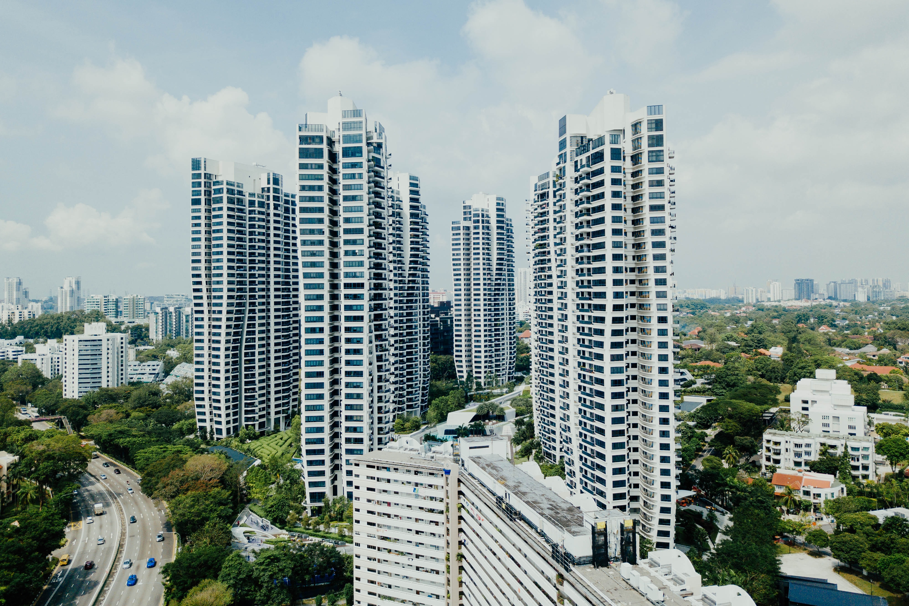

- 교통
- 역사
- 번화가
개요
구월아시아드 선수촌 아파트 시세
개요

인천광역시 남동구 서쪽에 위치한 법정동. 면적은 5.42㎢이며, 동쪽으로는 만수동, 서쪽으로는 미추홀구 주안동과 관교동, 남쪽으로는 남촌도림동, 북쪽으로는 간석동에 접해 있다. 남동구의 빅 3[2] 중 하나이며 인천의 최대 상권이기도 하다.
2015년 기준 구월동 상권의 범위는 대략 북으로는 인천광역시청, 남으로는 인천종합버스터미널, 서로는 중앙공원, 동으로는 구월아시아드선수촌에 이른다.
국회의원 선거구는 2동만 을(乙) 선거구이고 나머지 동은 갑(甲) 선거구이다.